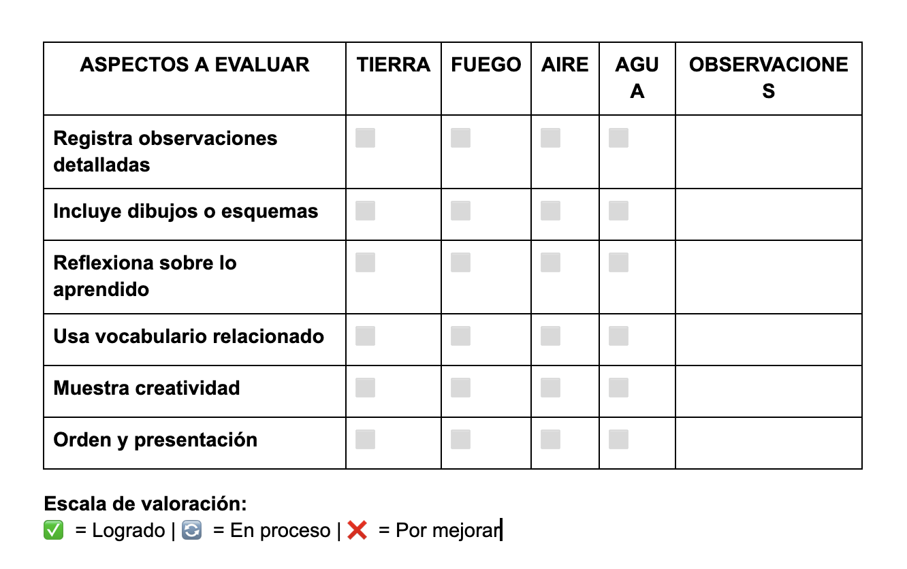

Evaluación
Para garantizar que los niños comprendan los conceptos clave sobre los cuatro elementos de la naturaleza, la evaluación se realizará de manera dinámica y adaptada a su edad. Se emplearán diversas estrategias que permitan medir el aprendizaje de forma lúdica y participativa.
1. Diagnóstico
Antes de comenzar la formación, se aplicarán actividades para conocer el nivel de conocimientos previos de los niños sobre los cuatro elementos. Estas pueden incluir:
- Preguntas abiertas sobre qué saben y qué les gustaría aprender.
- Juego de asociación de imágenes con los elementos correspondientes.
- Breve conversación grupal para explorar sus ideas sobre la naturaleza.
2. Evaluación Formativa (Durante la Formación)
A lo largo de la formación, se utilizarán diversas estrategias para evaluar el aprendizaje de manera continua y reforzar los conocimientos:
- Llevar a cabo las actividades relacionadas con la formación, donde el estudiante aplicará los conocimientos adquiridos para responder a las preguntas planteadas. (Instrumentos de Evaluación: Rúbricas de evaluación, incluidas abajo)
- Cuaderno de explorador, donde los niños registrarán descubrimientos y reflexiones sobre cada elemento. (Instrumentos de Evaluación: Checklist)

3. Evaluación Final
Al finalizar la formación, se desarrollará una actividad final para comprobar lo aprendido de manera divertida.
Esta evaluación permitirá no solo medir el conocimiento adquirido, sino también fomentar la creatividad, el trabajo en equipo y la conciencia ambiental en los niños. Instrumento evaluación : Rúbrica de evaluación.